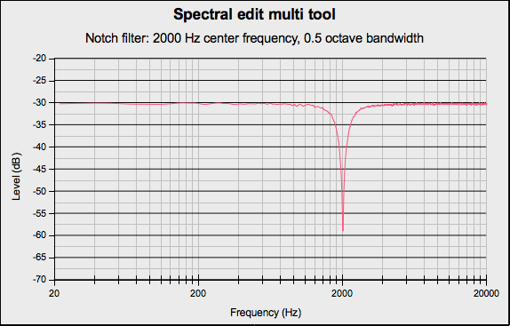
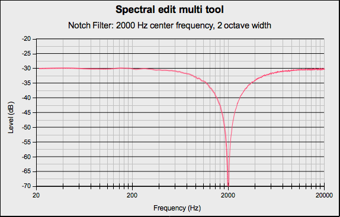
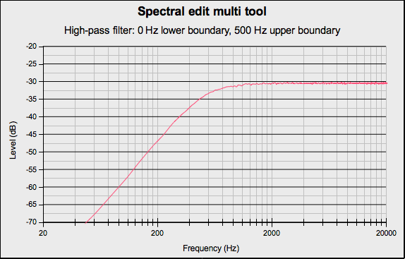
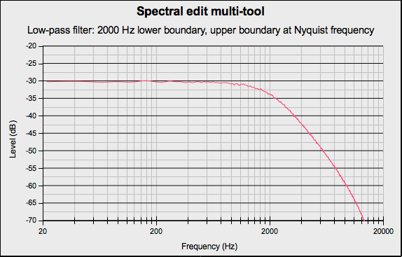

Spectral edit multi tool
- Accessed by:
Depending on how the track is displayed and what spectral selection has been made, this effect will do one of the following:
- When the track is not in a Spectrogram View with Spectral Selection enabled, an error message will be displayed
- When the spectral selection has a center, upper and lower frequency this effect performs as a notch filter with the center frequency defined by the center frequency of the spectral selection and the width defined by the upper and lower frequencies of the spectral selection
- When the spectral selection begins at 0 Hz this effect performs a high pass filter with a rolloff of 12 dB/octave and with the cutoff frequency defined by the upper frequency of the spectral selection
- When the spectral selection ends at the Nyquist frequency of the track this effect performs a low pass filter with a rolloff of 12 dB/octave and with the cutoff frequency defined by the lower frequency of the spectral selection
- When both the upper and lower frequency bound of the spectral selection are undefined, an error message will be displayed. You should go back and define one or both frequency bounds.
| If the attenuation is not sufficient, you can use Ctrl + R to repeat the effect. |
Examples
Notch Filter
If you make a spectral selection that has both an upper and lower boundary, selecting will apply a notch filter.
In the following example the spectral selection had a center frequency of 2000 Hz and a bandwidth of 0.5 octave.
- 
In the following example the spectral selection had a center frequency of 2000 Hz and a bandwidth of 2 octaves.
- 
High-pass filter
If you make a spectral selection that has the lower boundary at 0 Hz, selecting will apply a high-pass filter.
In the following example the spectral selection had a lower boundary of 0 Hz and an upper boundary of 500 Hz.
- 
Low-pass filter
If you make a spectral selection that has the upper boundary at the Nyquist frequency of the track, selecting will apply a low-pass filter.
In the following example the spectral selection had a lower boundary of 0 Hz and an upper boundary of 2000 Hz.
- 